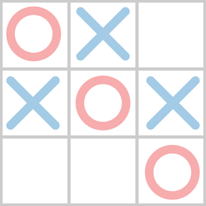

Tic-Tac-Toe
What is That ?

Game tic-tac-toe merupakan permainan klasik berjenis permainan papan (board-game) dengan papan permainan berukuran 3x3. Board-game adalah permainan dengan kepingan-kepingan yang ditempatkan di atas, dipindahkan dari atau digerakkan di atas suatu permukaan khusus, permukaan khusus itu disebut papan permainan
Sejarah Tic-Tac-Toe
Menurut sejarah Tic Tac Toe berasal dari Kekaisaran Romawi sekitar abad pertama sebelum masehi. Masyarakat setempat menyebutnya Terni Lapili. Permainan ini sama seperti yang kita temukan di zaman sekarang yang dimainkan oleh dua orang pemain dengan menggunakan tiga bidak, pemain harus membentuk satu barisan dengan bidak-bidak yang dimiiki di lembar kertas papirus. Namun ada informasi lain, menurut Claudia Zaslavsky dalam buku Tic Tac Toe: And Other Three-In-A Row Games from Ancient Egypt to the Modern Computer, Tic-Tac-Toe berasa Mesir kuno.
Sejarah Tic-Tac-Toe
Namun bagaimana permainan ini mulai disebut dengan nama Tic Tac Toe? Pada tahun 1884, anak-anak bermain di sebuah batu tulis dimana mereka menutup mata sambil mencoretkan batu dengan dua simbol "X" dan "O" membentuk satu barisan namun disertai suara tic dan tac dari anak-anak. Pada tahun 1952, Tic Tac Toe mulai marak diminati karena untuk pertama masuk ke dunia video game OXO (or Noughts and Crosses) untuk komputer EDSAC. Pemain bisa memainkan Tic-Tac-Toe dengan melawan komputer bahkan dapat multyplay melawan manusia. Pada tahun 1975, Tic Tac Toe juga digunakan oleh siswa MIT untuk menunjukkan kekuatan komputasi dari elemen Tinkertoy yang saat ini dipamerkan di Museum of Science, Boston .
How to Play
Pada game Tic-Tac-Toe terdiri dari 9 kolom yang berfungsi untuk meletakan nilai tersebut. Yang mana untuk memenangkan game tersebut pemain harus dapat membentuk nilai X atau O berbentuk vertikal, horizontal atau diagonal pada kolom tersebut.